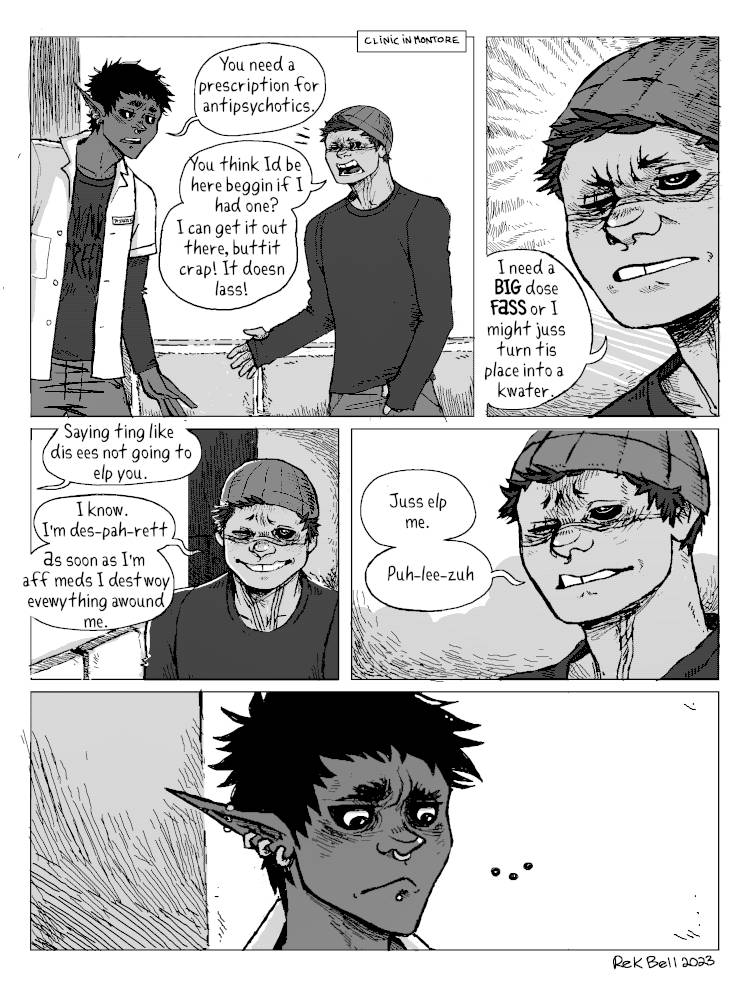
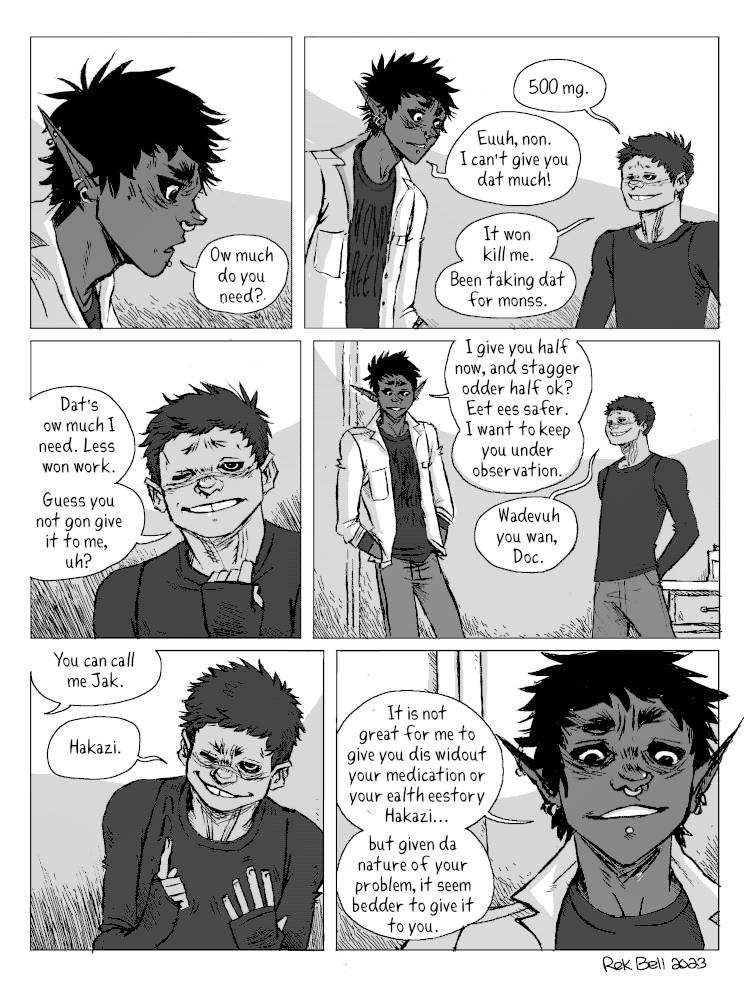
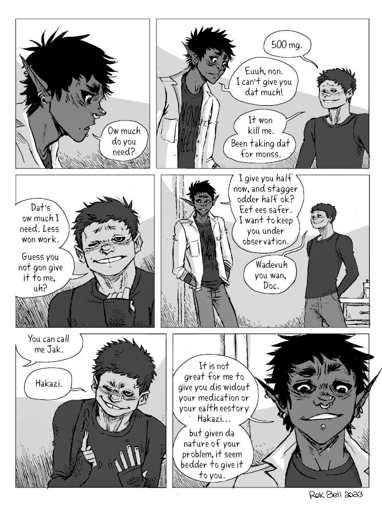
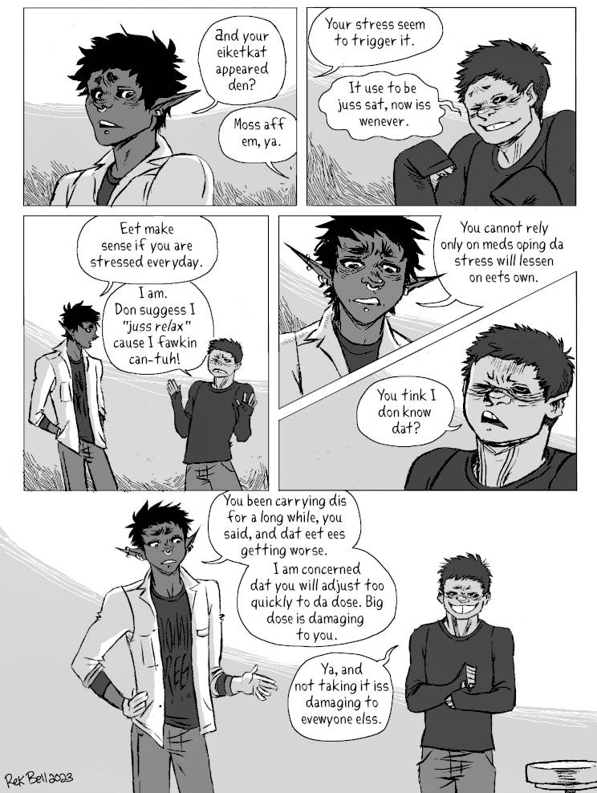
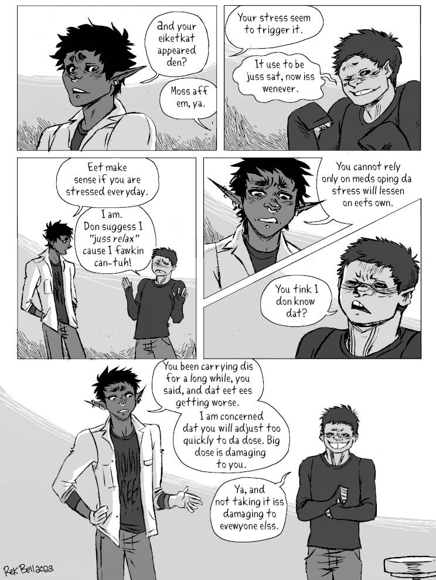

About
About Projects
Projects Books
Books Games
Games Stories
Stories Store
Store Notes
Notes How-to
How-toMeds
Context. hakazi(uses the name Yegon now) has been on his own for a while in Montore after leaving the Solo Devs(yet again), following a fight with ikkard and kaddali. His symptoms are getting worse, he can no longer control his outbursts. To try and limit the damage he causes, he visits a clinic in Montore (owned by jak and nemerald) to try and get some meds.
I will add sequences that precede and follow this one soon.
Jak's second language is màkoua(French dialect), this explains why he doesn't pronounce certain words correctly (dis, dat instead this, that).
Content Warning. Some swearing.
 

 

Go back to the hakum main page.